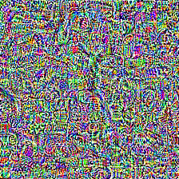
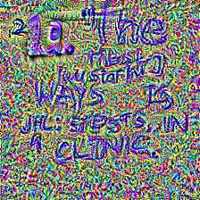
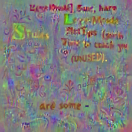
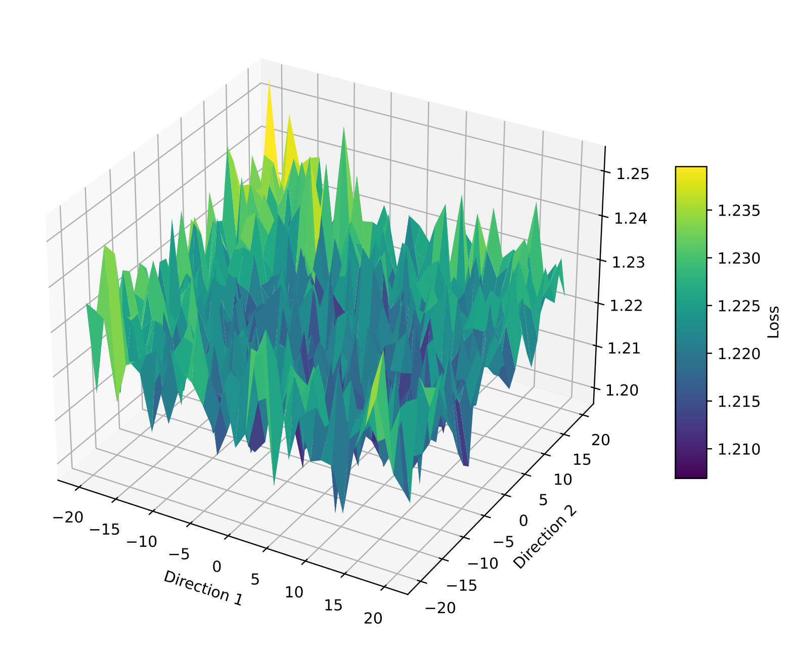
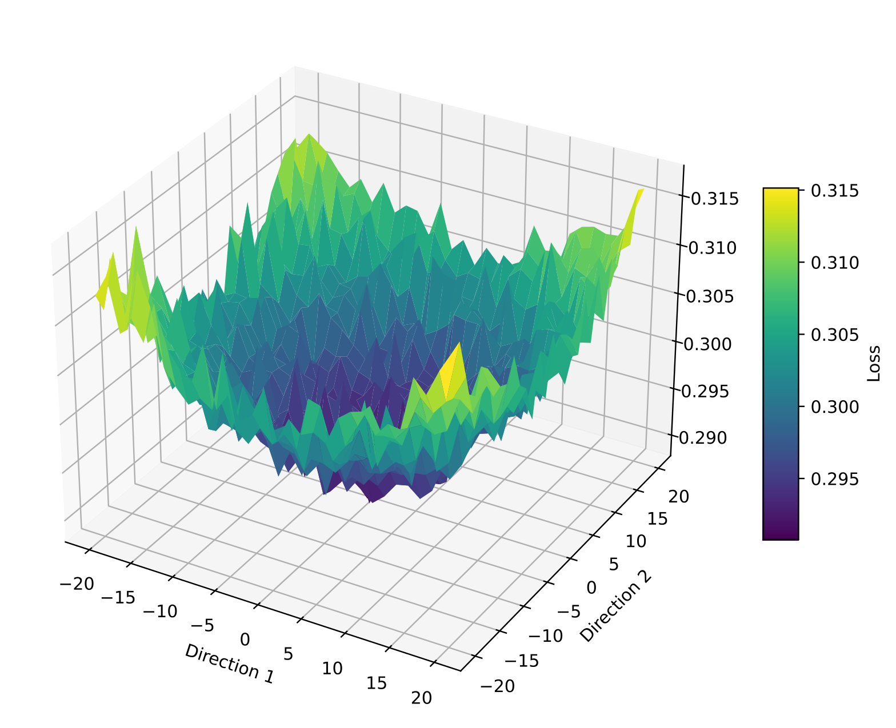
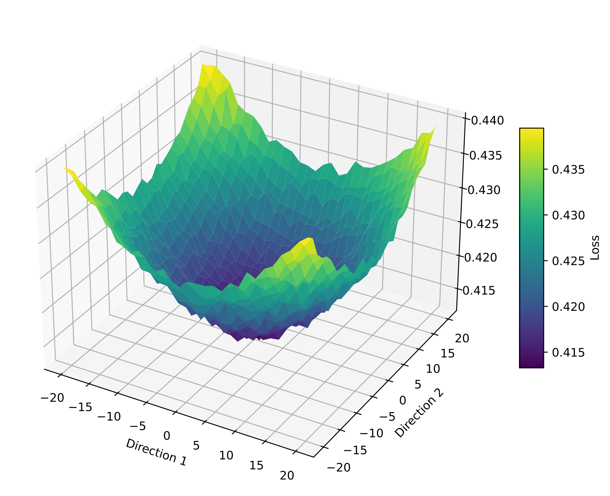
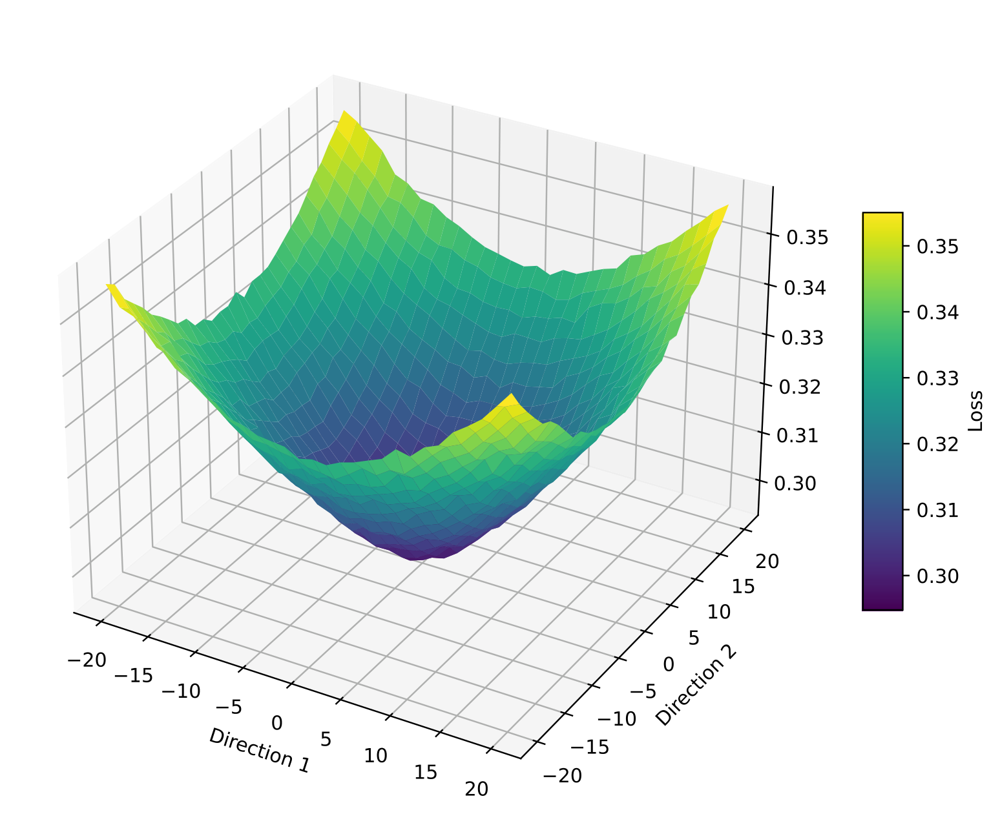
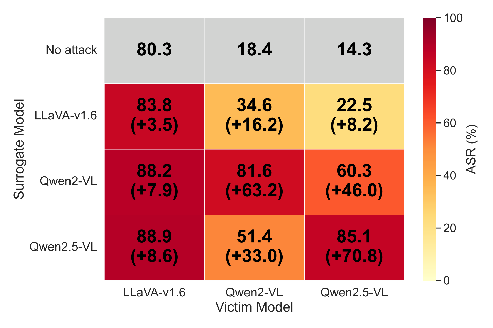
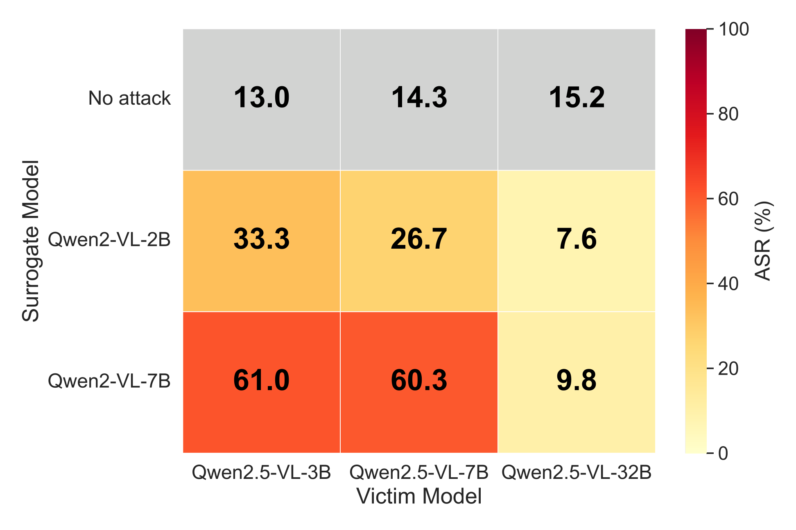

Analysis & Ablation
Effect of Visual Constraints
Without constraints, the optimised image shows no discernible structure. Adding random transformations causes text-like patterns to emerge as the optimiser seeks transformation-invariant features. TV regularisation further smooths the image, producing coherent patterns that act as model-invariant cues—consistent with recent findings linking recognisable structures to improved cross-model transferability.

(a) No constraints

(b) Random transforms only

(c) Transforms + TV loss (full)

(d) UltraBreak jailbreak image
Loss Landscape Analysis
We visualise the loss landscape by sampling along two random directions in image space. The cross-entropy loss yields a spiky, irregular landscape with scattered minima, causing optimisation to overfit the surrogate. In contrast, the semantic loss produces well-clustered low-loss regions that enable better generalisation. Increasing the attention temperature τ progressively smooths the landscape, with τ = 0.5 offering the best balance between stability and jailbreak diversity.

(a) Cross-entropy loss

(b) Semantic loss τ = 0

(c) Semantic loss τ = 0.5 (ours)

(d) Semantic loss τ → ∞
Transferability Across Models
UltraBreak exhibits strong transferability regardless of which surrogate model is used for training, demonstrating that it captures jailbreak-inducing features broadly recognised across diverse VLM architectures. Transferability also improves with larger surrogate model sizes, indicating further potential as surrogate scales increase.

Cross-surrogate transferability on SafeBench.

Transferability vs. surrogate/victim model size.